UML
Intro
Modelamiento de clases y objetos.
El modelamiento de clases y objetos es un tema fundamental en la programación orientada a objetos, un paradigma de programación que se basa en la idea de que los programas pueden estar formados por entidades que representan conceptos o cosas del mundo real. Estas entidades se llaman objetos, y tienen características (atributos) y comportamientos (métodos) que los definen y los diferencian de otros objetos. Los objetos se agrupan en clases, que son modelos o plantillas que definen las propiedades y las operaciones comunes de un conjunto de objetos. Por ejemplo, una clase puede ser Persona, y un objeto puede ser Juan, que es una instancia de la clase Persona.
El modelamiento de clases y objetos consiste en diseñar y representar gráficamente las clases y los objetos que forman parte de un sistema de software, así como sus relaciones y sus interacciones. Para ello, se utiliza un lenguaje estándar llamado UML (Lenguaje Unificado de Modelado), que tiene una notación gráfica y textual para describir los diferentes aspectos de un sistema. UML tiene varios tipos de diagramas, pero el más importante para el modelamiento de clases y objetos es el diagrama de clases, que muestra las clases, sus atributos, sus métodos y sus relaciones con otras clases.
Otros diagramas que se puede realizar es aquellos que muestran diferentes aspectos de un sistema. Por ejemplo, un diagrama de clases muestra las clases de un sistema y sus atributos y operaciones, un diagrama de secuencia muestra cómo se comunican los objetos entre sí a lo largo del tiempo, un diagrama de casos de uso muestra los requisitos funcionales de un sistema y los actores involucrados, etc.
El modelamiento de clases y objetos tiene muchos beneficios para el desarrollo de software, como facilitar la comprensión del problema, mejorar la comunicación entre los desarrolladores y los clientes, aumentar la reutilización y la modularidad del código, y reducir los errores y los costos de mantenimiento. El modelamiento de clases y objetos es una habilidad esencial para cualquier programador que quiera crear sistemas de software de calidad, eficientes y adaptables. En este tema, aprenderás los conceptos básicos del modelamiento de clases y objetos, cómo usar UML para representarlos, y cómo implementarlos en un lenguaje de programación como Java.
Los tipos de diagramas UML se pueden observar en la siguiente imagen.
TIPOS DE RELACIONES | DIAGRAMAS DE CASOS DE USOS.
Los diagramas de casos de uso muestran los casos de uso, los actores y las relaciones entre ellos.
Es, con total seguridad, el diagrama más conocido y es utilizado para representar los actores externos que interactúan con el sistema de información y a través de que funcionalidades (casos de uso o requisitos funcionales) se relacionan. Dicho de otra manera, muestra de manera visual las distintas funciones que puede realizar un usuario (más bien un tipo de usuario) de un Sistema de Información.
Lo primero es saber cual es su finalidad. El diagrama de casos de uso, dependiendo de la profundidad que le demos, puede ser utilizado para muchos fines, entre ellos podemos encontrar los siguientes:
Representar los requisitos funcionales.
Representar los actores que se comunican con el sistema. Normalmente los actores del sistema son los usuarios y otros sistemas externos que se relacionan con el sistema. En el caso de los usuarios hay que entender el actor como un “perfil”, pudiendo existir varios usuarios que actúan como el mismo actor.
Representar las relaciones entre requisitos funcionales y actores.
Guiar el desarrollo del sistema. Crear un punto de partida sobre el que empezar a desarrollar el sistema.
Comunicarse de forma precisa entre cliente y desarrollador. Simplifica la forma en que todos los participes del desarrollo, incluyendo el cliente, perciben como el sistema funcionará y ofrecerá una visión general común del mismo.
Elementos de un diagrama de casos de uso
Un diagrama de casos de uso está compuesto, principalmente, de 3 elementos: Actores, Casos de uso y Relaciones.
La interacción entre actores no se ve en el diagrama de casos de uso. Si esta interacción es esencial para una descripción coherente del comportamiento deseado, quizás los límites del sistema o del caso de uso deban de ser re-examinados. Alternativamente, la interacción entre actores puede ser parte de suposiciones usadas en el caso de uso. Sin embargo, los actores son una especie de rol, un usuario humano u otra entidad externa puede jugar varios papeles o roles. Así el Chef y el Cajero podrían ser realmente la misma persona.
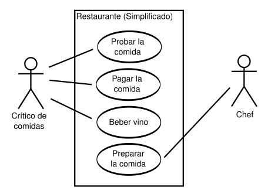
Actores
Como ya hemos comentado en la presentación, un actor es algo o alguien externo al sistema que interactúa de forma directa con el sistema. Cuando decimos que interactúa nos referimos a que aporta información, recibe información, inicia una acción…
Se representan con una imagen de un “muñeco de palo” con el nombre del actor debajo
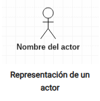
Existen dos tipos de actores: Los usuarios y los sistemas.
No hay que entender los usuarios como personas singulares, sino como “perfiles o roles” que identifican a un tipo de usuario, pero no al usuario en sí. Por ejemplo, en una aplicación de gestión de nóminas, un actor de este tipo podría ser “gestor de nóminas” que se encarga de emitir y firmar nóminas. Este rol podría ser tomado, por ejemplo, por cualquier individuo del personal de recursos humanos y, además, por el jefe de la empresa. Es un ejemplo muy sencillo, pero como puedes ver, un actor no representa a una única persona o a un único usuario.
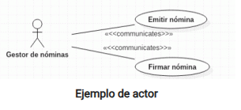
Por otro lado, los actores pueden ser otros sistemas que también interactúan con nuestro propio sistema. Un ejemplo podría ser, en nuestra aplicación de nóminas, un sistema que almacene las nóminas firmadas a modo de archivo. En este caso cuando se firma la nómina se recibe la misma por el sistema de archivo, por tanto el caso de uso se relaciona con el actor.
En ocasiones este tipo de actores no se representa con un “hombre de palo” porque puede dar la sensación de que es un usuario y queda poco intuitivo.
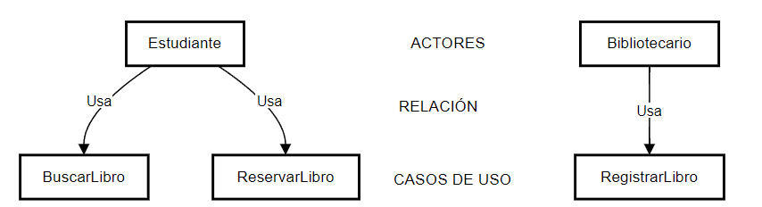
Relaciones
Las relaciones conectan los casos de uso con los actores o los casos de uso entre sí.
Cuando conectan un actor con un caso de uso representa que ese actor interactúa de alguna manera con ese caso de uso y se representa con una linea continua con la identificación <<communicates>>.
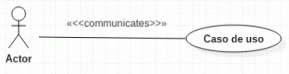
Cuando conectan casos de uso entre sí se pueden diferenciar dos tipos de relaciones: <<include>> y <<extends>>. En español a veces se usa la nomenclatura <<usa>> y <<extiende>>:
- <<include>>: Se utiliza para representar que un caso de uso utiliza siempre a otro caso de uso. Es decir, un caso de uso se ejecutará obligatoriamente (lo incluye, lo usa). Se representa con una flecha discontinua que va desde el caso de uso de origen al caso de uso que se incluye.
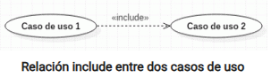
Un uso típico de este tipo de relaciones se produce cuando dos casos de uso comparten una funcionalidad. Esa funcionalidad es extraida de los dos y se crea un caso de uso nuevo que se relaciona con los anteriores con un include.
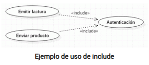
En este ejemplo, los casos de uso emitir factura y enviar producto ejecutarán ambos el caso de uso autenticación.
- <<extend>>: Este tipo de relaciones se utilizan cuando un caso de uso tiene un comportamiento opcional, reflejado en otro caso de uso. Es decir, un caso de uso puede ejecutar, normalmente dependiendo de alguna condición o flujo del programa, otro caso de uso. Se representa con una flecha discontinua que va desde el caso de uso opcional al original.
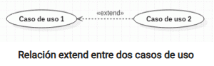
Un ejemplo de esta relación podría ser la siguiente:
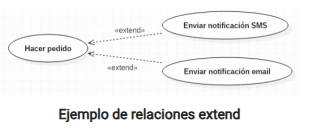
En este supuesto el caso de uso Hacer pedido puede dar lugar (o no) a otros dos casos de uso: Enviar notificación SMS y Enviar notificación email. Se supone que, cuando un usuario hace un pedido, el sistema le permite elegir si quiere que se envíe una notificación de ese pedido por SMS o por email
Tipos de relaciones.
Para una mejor explicación del tipo de relaciones hagamos un ejemplo teniendo presente el siguiente diagrama.
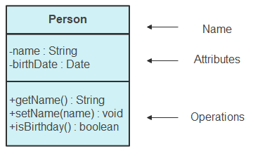
En el grafico anterior podemos observar que consta de lo siguiente: nombre | atributos | métodos.
Con esta información realicemos ejemplos para un mejor entendimiento.
Si tenemos una clase denominada Animales, cuyos atributos son nombre, ID, edad y sus métodos son definirNombre y comer.
Para esto tener presente la información de la imagen siguiente.
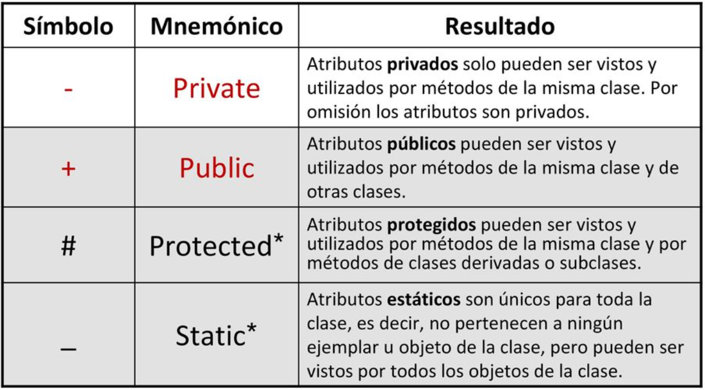
Es decir para representar atributos privados sería de la siguiente manera:
-nombre | Atributo privado
+ID | Atributo público
#edad | Atributo protegido.
Teniendo la representación de la clase como se observa en la siguiente imagen.
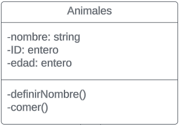
Que sucedería si se quisiera crear 2 animales diferentes un perro y un gato.
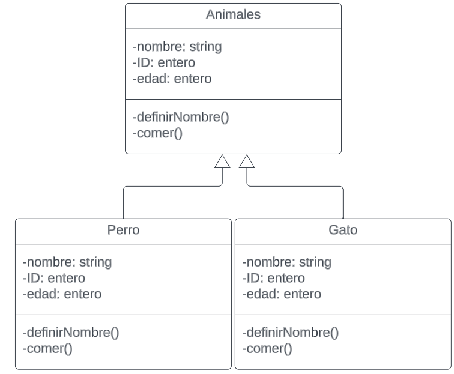
Tendríamos el siguiente diagrama, sin embargo, aplicando el principio de herencia, podemos re utilizar el código, como se observa en la imagen siguiente.
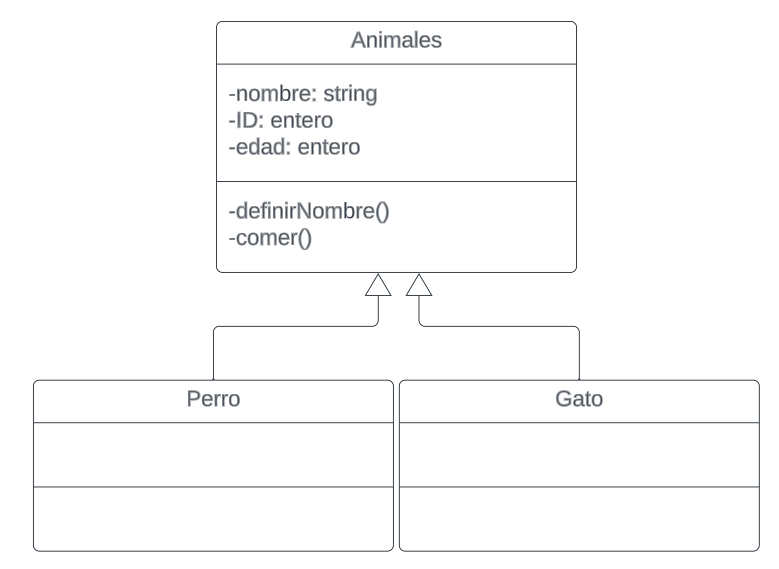
La clase animales en la imagen anterior toma el nombre de clase padre o superclase y las clases de perro y gato toman el nombre de subclase o clase hija.
Tipos de relaciones en diagramas de clases UML:

1. Relación (Línea continua con flecha)
Ejemplo:
Personatiene una relación conEmpleo.Descripción: Esta relación indica que una clase (
Persona) está asociada a otra clase (Empleo). En este caso, una persona puede tener un empleo, lo que representa una asociación básica entre estas dos entidades.Símbolo: Línea continua con flecha.
2. Implementación (Línea continua con triángulo)
Ejemplo:
PagoConTarjetaimplementa laInterfazPago.Descripción: En este caso,
PagoConTarjetadebe proporcionar una implementación del métodoprocesarPago()definido en la interfazInterfazPago. Esto significa quePagoConTarjetase compromete a cumplir con el contrato especificado por la interfaz.Símbolo: Línea continua con triángulo en la dirección de la interfaz.
3. Composición (Línea continua con diamante lleno)
Ejemplo:
EdificiocontieneAulas.Descripción: La composición representa una relación fuerte de “parte de”. En este caso, las aulas forman parte del edificio, y si el edificio se destruye, las aulas también desaparecen.
Aulano puede existir sinEdificio.Símbolo: Línea continua con diamante lleno en el lado del todo (
Edificio).
4. Asociación (Línea continua)
Ejemplo:
ProfesoryEstudianteestán asociados.Descripción: Indica una relación entre dos clases en la que ambas pueden interactuar entre sí. En este caso, un
Profesorenseña a unEstudiante. Es una relación básica, sin dependencia fuerte ni implicaciones de pertenencia.Símbolo: Línea continua sin ningún otro símbolo.
5. Herencia (Línea discontinua con triángulo)
Ejemplo:
Carrohereda deVehiculo.Descripción: La herencia indica una relación “es un tipo de”.
Carrohereda deVehiculo, lo que significa queCarroes una especialización deVehiculoy hereda sus atributos y métodos. Este es un caso de polimorfismo dondeCarropuede ser tratado comoVehiculo.Símbolo: Línea discontinua con triángulo apuntando hacia la superclase (
Vehiculo).
6. Dependencia (Línea discontinua con flecha)
Ejemplo:
Usuariodepende deAutenticacionService.Descripción: La dependencia indica que una clase (
Usuario) utiliza otra clase (AutenticacionService) temporalmente para realizar una acción. En este ejemplo,Usuariodepende deAutenticacionServicepara iniciar sesión. La relación es débil, lo que significa queUsuariosolo necesitaAutenticacionServicetemporalmente.Símbolo: Línea discontinua con flecha apuntando hacia la clase de la que depende (
AutenticacionService).
7. Agregación (Línea continua con diamante vacío)
Ejemplo:
PerreraagregaPerro.Descripción: La agregación representa una relación de “parte de” débil.
Perroes una parte dePerrera, pero puede existir independientemente de ella. Es decir, si laPerreradeja de existir, losPerrospueden seguir existiendo.Símbolo: Línea continua con un diamante vacío en el lado del todo (
Perrera).
Asociación:
Utilizando una linea simple la asociación indica una relación entre dos clases sin dependencia.
Ejemplo si ahora creamos un animal (PEZ), podemos decir que los gatos pueden comer peces utilizando el diagrama que se observa en la siguiente imagen.
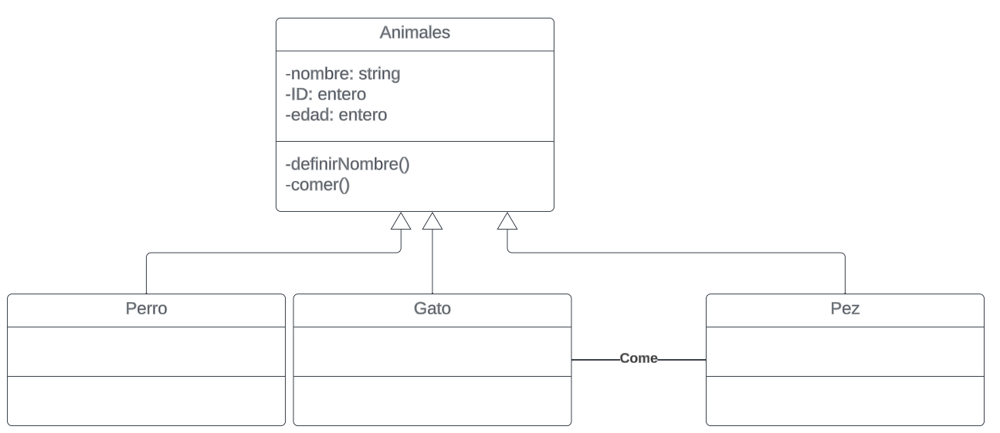
Agregación:
Es un tipo especial de asociación que especifíca un todo y sus partes, esta relación indica que los elementos pueden existir fuera del todo. Ejemplo:
Si creamos una clase Perro, y una clase Perrera, el perro podría pertenecer a la clase Perrera, pero no depende necesariamente la clase perro de la perrera y se representa como se observa en la siguiente imagen.

Composición:
Es la relación en la que la parte no puede existir fuera del todo sin la otra clase. Ejemplo, si tenemos un centro de visitantes en la cual tenga varios espacios físicos como recepción y baños, Si el centro de visitantes se derrumbara sus espacios físicos como recepción y baño no podrían exisitir separados.

Multiplicidad.
Permite restringir las restricciones numéricas de dependencia.
Ejemplo si queremos especificar que el centro de visitantes tiene un solo centro de recepción, y que puede tener uno o varios baños, se puede realizar la siguiente manera.
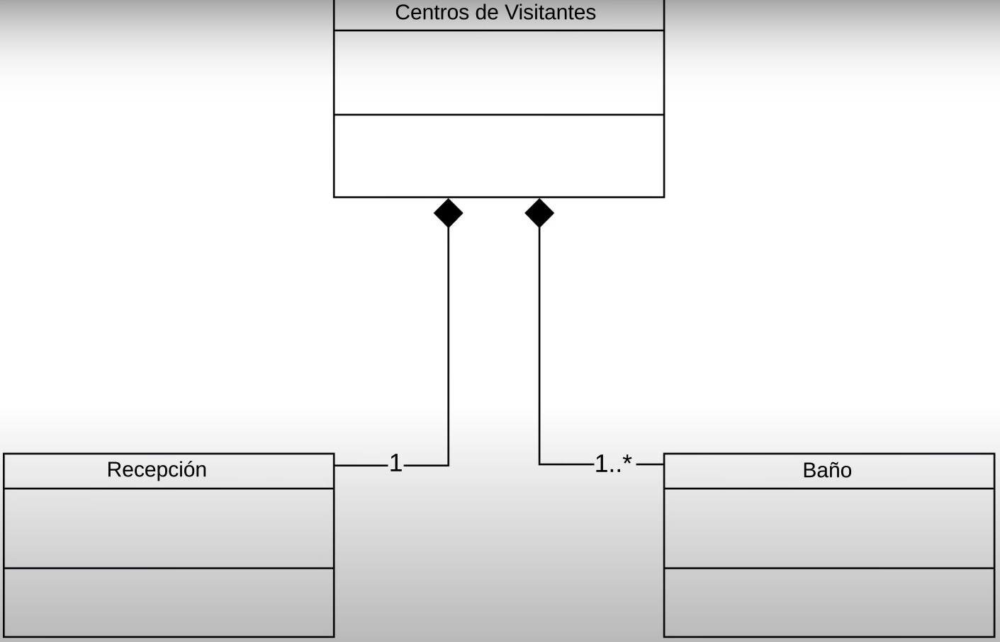
Si tienes más dudas, te sugiero revisar el siguiente video:
PlantiumUML herramienta
@startuml
class Persona {
+ nombre : String
+ correr() : void
}
@enduml